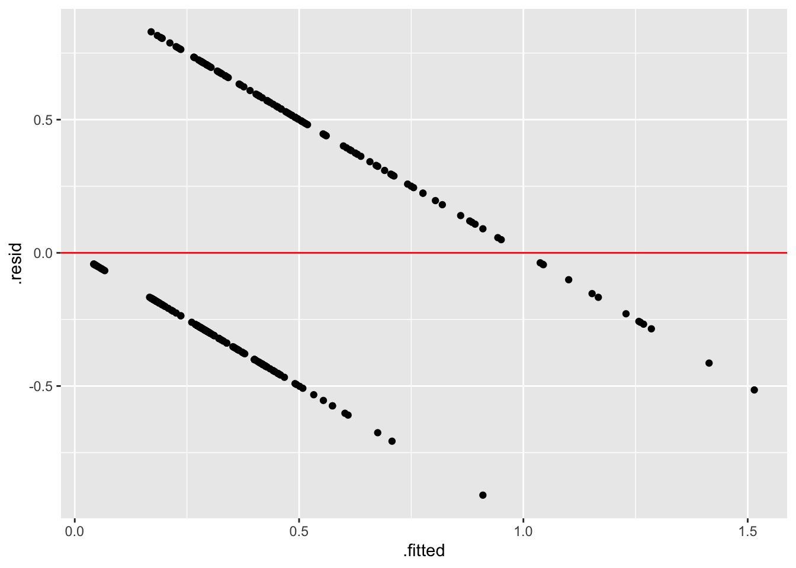

library(tidyverse)
library(tidymodels)
library(kableExtra)
library(MASS)
library(randomForestSRC) # for pbc data
data(pbc, package = "randomForestSRC")Lecture 15: Logistic regression
BIOS 600 - Summer Session II 2026
Announcements
HW 14 due tonight
HW 15 due tomorrow
Class tomorrow will be review for the final exam!
Hand in Application Exercise 3 if you haven’t already, and you can resubmit if you lost points on your first submission.
Make an appointment or come to my office hours this afternoon to go over your Exam 2 for points back!
Overview
Review of Linear Regression
Logistic regression
Interpreting estimated coefficients from a logistic regression model
Computational setup
Very optional reading
P&G Chapter 20
OI: Section 9.5
Review of Linear Regression
fit_int <- lm(Obesity ~ Exercise +
Smoking +
Exercise*Smoking,
data = cdc)
tidy(fit_int) |>
kable(digits = 3)| term | estimate | std.error | statistic | p.value |
|---|---|---|---|---|
| (Intercept) | 38.577 | 13.867 | 2.782 | 0.008 |
| Exercise | -0.358 | 0.270 | -1.325 | 0.192 |
| Smoking | 0.408 | 0.729 | 0.559 | 0.579 |
| Exercise:Smoking | 0.003 | 0.015 | 0.186 | 0.853 |
Review of Linear Regression
Based on this p-value, at \(\alpha=0.05\), I do not have evidence to suggest there are differences in the association between obesity and exercise based on smoking
Often, based on non-significant p-values, people remove the interaction term and refit the model
Review of Linear Regression
fit_int <- lm(Obesity ~ Exercise +
Smoking,
data = cdc)
tidy(fit_int) |>
kable(digits = 3)| term | estimate | std.error | statistic | p.value |
|---|---|---|---|---|
| (Intercept) | 36.100 | 3.863 | 9.345 | 0 |
| Exercise | -0.309 | 0.056 | -5.538 | 0 |
| Smoking | 0.542 | 0.087 | 6.224 | 0 |
Should you remove it?
Let’s say you’re analyzing a randomized trial
- Preventive therapy for cardiovascular disease
- You included a treatment × sex interaction term
- P-value for the interaction term was 0.83
Would you remove it?
If you want to know does this therapy benefit men and women similarly?
If you want to know how does this treatment reduce CVD risk?
If you know of or suspect strong sex differences in disease mechanisms or treatment pathways?
If you know the study is underpowered to detect interactions?
Is this one of many potential effect modifiers?
You could. . .
- Drop interaction term and report overall effect
- Keep interaction and present estimates
- Primary analysis only
- Supplementary analysis only
- No single answer applies to all scenarios
Logistic regression
Models for binary outcomes
library(tidyverse)- Suppose we have a binary outcome variable (e.g., \(Y = 1\) if a condition is satisfied and 0 otherwise), and potentially multiple predictors on a variety of scales.
What distribution does our outcome have?
Models for binary outcomes
- Suppose we want to model \(P(Y=1)\), the success probability. One strategy might be to simply fit a linear regression model to the probabilities:
\[P(Y_i = 1) = \beta_0 + \beta_1 x_{i1} + \cdots + \beta_p x_{ip} + \epsilon_i\]
Is this a reasonable approach? Why or why not?
Primary biliary cirrhosis
The Mayo Clinic conducted a trial for primary biliary cirrhosis, comparing the drug D-penicillamine vs. placebo. Patients were followed for a specified duration, and their status at the end of follow-up (whether they died) was recorded. Researchers are interested in predicting whether a patient died based on the following variables:
ascites: whether the patient had ascites (abnormal fluid buildup in the abdomen) (1 = yes, 0 = no)bili: serum bilirubin in mg/dL (higher values may indicate liver damage/disease)stage: histologic stage of disease (ordinal categorical variable with stages 1, 2, 3, and 4)
What can go wrong?
Suppose we fit the following model:
\[P(Y_i = 1) = \beta_0 + \beta_1 asc_i + \beta_2 bili_i + \beta_3 s2_i + \beta_4 s3_i + \beta_5 s4_i + \epsilon_i\]
where \(Y=1\) if a patient died during the study follow-up.
What can go wrong?
What could go wrong?
- We can technically fit the model:
model <- lm(status ~ ascites + bili + as.factor(stage),
data = pbc)
tidy(model) |>
kable(digits = 3)| term | estimate | std.error | statistic | p.value |
|---|---|---|---|---|
| (Intercept) | 0.025 | 0.107 | 0.235 | 0.815 |
| ascites | 0.283 | 0.102 | 2.786 | 0.006 |
| bili | 0.035 | 0.006 | 5.938 | 0.000 |
| as.factor(stage)2 | 0.131 | 0.119 | 1.103 | 0.271 |
| as.factor(stage)3 | 0.230 | 0.114 | 2.015 | 0.045 |
| as.factor(stage)4 | 0.355 | 0.117 | 3.037 | 0.003 |
- However, let’s check the fitted vs. residuals plot.
What could go wrong?

From probabilities to log odds
Suppose the probability of an event is \(p\).
Then the odds that the event occurs is \(\frac{p}{1-p}\)
Taking the natural log of the odds, we have the logit of \(p\) (also known as the log-odds):
\[logit(p) = \text{log} \left(\frac{p}{1-p}\right)\]
- Although \(p\) is constrained to lie between 0 and 1, the logit of \(p\) can be anything from \(-\infty\) to \(\infty\).
Logistic regression model
Let’s create a linear model for the log-odds:
\[logit(p_i) = \text{log} \left(\frac{p_i}{1-p_i}\right) = \beta_0 + \beta_1 x_{i1} + \cdots + \beta_p x_{ip}\]
This is the logistic regression model.
In this model, it’s ok that we could get any potential value for the logit of \(p\) (can range from \(-\infty\) to \(+ \infty\)).
Once we get our \(\hat\beta\) estimates, we can always back-transform to get a valid probability between 0 and 1.
Interpreting parameters
Suppose that X is a binary (0/1) variable (e.g., X = 1 for smoker and 0 for non-smoker). In this case, we interpret \(\text{exp}(\beta_1)\) as the odds ratio (OR) of the response for the two possible levels of X.
For X on a continuous scale, \(\text{exp}(\beta_1)\) is interpreted as the odds ratio of the response comparing two values of X one unit apart.
Back to PBC
fit2 <- glm(status ~ ascites + bili + as.factor(stage),
data = pbc,
family = "binomial")
tidy(fit2) |>
kable(digits = 3)| term | estimate | std.error | statistic | p.value |
|---|---|---|---|---|
| (Intercept) | -3.143 | 1.054 | -2.981 | 0.003 |
| ascites | 2.868 | 1.067 | 2.689 | 0.007 |
| bili | 0.315 | 0.064 | 4.886 | 0.000 |
| as.factor(stage)2 | 1.251 | 1.095 | 1.142 | 0.253 |
| as.factor(stage)3 | 1.716 | 1.069 | 1.604 | 0.109 |
| as.factor(stage)4 | 2.167 | 1.075 | 2.015 | 0.044 |
Interpretations
\(\hat\beta_{\text{ascites}}\): The estimate for ascites was 2.87. Thus, the odds ratio for dying is exp(2.87), or approx. 17.6. Patients with ascites have 17.6 times the odds of dying compared to patients that do not, holding all other variables constant.
\(\hat\beta_{\text{bili}}\): The estimate for bilirubin was 0.31. Thus, the odds ratio for dying for a patient with 1 additional mg/dL serum bilirubin compared to another is exp(0.31) ≈ 1.36, holding all other variables constant.
Interpretations
- \(\hat\beta_{\text{stage 3}}\): The baseline stage was 1. The estimate corresponding to stage 3 was 1.72. Thus, patients in stage 3 have approximately 5.58 times the odds of dying compared to patients with the baseline stage, holding all other variables constant.
TipYour turn
What is the interpretation for \(\hat\beta_{\text{stage 4}}\)?
Interpreting parameters
Why is this the interpretation for continuous variables?
Typically we interpret functions of parameters in logistic regression rather than the parameters themselves.
Interpreting parameters
For a model \(logit(p_i) = β_0+β_1X_i\)
The log odds of response for X = 1 is given by \(β_0+β_1\)
The log odds of response for X = 0 is \(β_0\).
So the odds ratio of response comparing X = 1 to X = 0 is given by:
\[\frac{\text{exp}(\beta_0 + \beta_1)}{\text{exp}(\beta_0)} = \frac{\exp(\beta_0)\exp(\beta_1)}{\exp(\beta_0)}= \text{exp}(\beta_1)\]
- In a multiple logistic regression model, this has to be interpreted conditionally on values of other variables in the model (i.e., controlling for them).
What does this mean?
- \(\beta_1=0\)
- exp(0) = 1
- Odds Ratio = \(\text{exp}(\beta_1)=\text{exp}(0) = 1\)
- No evidence of an association
What does this mean?
- \(\beta_1 \lt 0\)
- Odds Ratio = \(\text{exp}(\beta_1) \lt \text{exp}(0) = 1\)
- Odds Ratio < 1
- Continuous: A 1‑unit increase in the predictor is associated with lower odds of the outcome
- Categorical: Group has lower odds of the outcome than the reference group
What does this mean?
- \(\beta_1 \gt 0\)
- Odds Ratio = \(\text{exp}(\beta_1) \gt \text{exp}(0) = 1\)
- Odds Ratio > 1
- Continuous: A 1‑unit increase in the predictor is associated with higher odds of the outcome
- Categorical: This group has higher odds of the outcome than the reference group
What does this mean?
Negative \(\beta\) → Odds Ratio < 1
Positive \(\beta\) → Odds Ratio > 1
\(\beta\) = 0 → Odds Ratio = 1
Testing if \(\beta=0\) is equivalent to testing if the odds ratio = 1
Logistic regression model
\[logit(p_i) = \text{log} \left(\frac{p_i}{1-p_i}\right) = \beta_0 + \beta_1 x_{i1} + \cdots + \beta_p x_{ip}\]
Like with linear regression, we can use the estimated coefficients (\(\hat{\beta}\)) to make predictions for each individual
For logistic regression, we predict \(logit(p_i)= \text{log} \left(\frac{p_i}{1-p_i}\right)\)
\[logit(\hat{p}_i) = \text{log} \left(\frac{\hat{p}_i}{1-\hat{p}_i}\right) = \hat{\beta_0} + \hat{\beta_1} x_{i1} + \cdots + \hat{\beta_p} x_{ip}\]
Logistic regression model
- If \(p=0.5\) then \(\frac{p_i}{1-p_i}=1\)
- \(logit(p_i)=\text{log} \left(\frac{p_i}{1-p_i}\right)=log(1)=0\)
- Logit of 0 represents probability of 0.5
- If \(p>0.5\) then \(\frac{p_i}{1-p_i}>1\) and \(logit(p_i) > 0\)
- Positive logits represent probabilities above one-half
- If \(p<0.5\) then \(\frac{p_i}{1-p_i}<1\) and \(logit(p_i) < 0\)
- Negative logits represent probabilities less than one-half
Interpreting parameters
- Another function of the parameters we might be interested in is the probability.
- For the simple model
\[\text{log} \left(\frac{p_i}{1-p_i}\right) = \beta_0 + \beta_1 x_{i}\]
then the probability that \(Y = 1\) when \(X = 0\) is \(\frac{\text{exp}(\beta_0)}{1 + \text{exp}(\beta_0)}\)
- How did we get this?
Warning
If you’re curious how to convert logit to probability, see next slide. Prepare for math ahead! (This won’t be on the exam!)
Solving logistic model for \(p_i\)
\[\text{log} \left(\frac{p_i}{1-p_i}\right) = \beta_0 + \beta_1 x_{i}\]
\[\left(\frac{p_i}{1-p_i}\right) = \text{exp}(\beta_0 + \beta_1 x_{i})\]
\[p_i = (1-p_i)\text{exp}(\beta_0 + \beta_1 x_{i})\]
\[p_i = \text{exp}(\beta_0 + \beta_1 x_{i}) - p_i \text{exp}(\beta_0 + \beta_1 x_{i}) \]
\[p_i + p_i \text{exp}(\beta_0 + \beta_1 x_{i}) = \text{exp}(\beta_0 + \beta_1 x_{i}) \]
\[p_i(1 + \text{exp}(\beta_0 + \beta_1 x_{i})) = \text{exp}(\beta_0 + \beta_1 x_{i}) \]
\[p_i = \frac{\text{exp}(\beta_0 + \beta_1 x_{i})}{1 + \text{exp}(\beta_0 + \beta_1 x_{i}) } \]
Back to PBC
Remember, we are interested in the probability that a patient died during follow-up (a “success”). We are predicting the log-odds of this event happening.
Predicted probabilities
There is a one-to-one-relationship between \(p\) and \(logit(p)\). So, if we predict the log-odds, we can back-transform to get back to a predicted probability.
For instance, suppose a patient does not have ascites, has a bilirubin level of 5 mg/dL, and is a stage 2 patient. Their predicted log-odds are:
\[−3.14+0.31×5+1.25=−0.34\]
Thus, their predicted probability of dying is
\[\frac{\text{exp}(-0.34)}{1+\text{exp}(-0.34)} = 0.42\]
In R
# Example patient:
new_patient <- data.frame(
ascites = 0,
bili = 5,
stage = 2
)
# Get predicted log-odds (type = "link")
pred_logodds <- predict(fit2,
newdata = new_patient,
type = "link")
# Convert log-odds to odds
pred_odds <- exp(pred_logodds)
# Convert odds to probability
pred_prob <- pred_odds / (1 + pred_odds)In R
Type = link tells R to estimate the outcome variable in terms of a function of the linear predictor (in the case of logistic regression this returns the log-odds (logit) of the outcome)
Since generalized linear models do not model the outcome directly in the
glmfunction we need to specify the distribution via the family argumentSince generalized linear models do not model the outcome directly in the
predictfunction we need to specify the scale on which predictions are returned (e.g. log‑odds vs. probabilities)
Output
pred_logodds 1
-0.3180994 pred_prob 1
0.421139 Alternatively…
- We can also calculate the predicted probability directly using
predictby setting thetypeto be"response".
# Get predicted probability (type = "response")
pred_prob2 <- predict(fit2,
newdata = new_patient,
type = "response")
pred_prob2 1
0.421139 On your own
tidy(fit2) |>
kable(digits = 3)| term | estimate | std.error | statistic | p.value |
|---|---|---|---|---|
| (Intercept) | -3.143 | 1.054 | -2.981 | 0.003 |
| ascites | 2.868 | 1.067 | 2.689 | 0.007 |
| bili | 0.315 | 0.064 | 4.886 | 0.000 |
| as.factor(stage)2 | 1.251 | 1.095 | 1.142 | 0.253 |
| as.factor(stage)3 | 1.716 | 1.069 | 1.604 | 0.109 |
| as.factor(stage)4 | 2.167 | 1.075 | 2.015 | 0.044 |
By hand, write out the following. Leave in terms of values given:
What is the model we are using?
What is the predicted log odds of dying for a patient with ascites, a bilirubin level of 3 mg/dL, and stage 3?
Given this value, what is the predicted probability?
Hypothesis tests in logistic regression
Generally, we wish to know whether the OR = 1 or equivalently, whether the logit of \(p\) (a \(\beta\) coefficient) = 0. To test
\[H_0: \beta_k = 0\]
\[H_1: \beta_k \neq 0\]
we can compare the ratio of a parameter estimate to its standard error using the standard normal distribution (reason we use Z instead of t is a bit technical).
Confidence intervals
CIs for associations on the logit scale are given by
\[\hat \beta_j \pm z^*_{1-\alpha/2} \times \widehat {SE} (\hat\beta_j)\]
These are typically translated into confidence intervals in odds scale by exponentiating the lower and upper limits.
\[[\text{exp}(\hat \beta_j - z^*_{1-\alpha/2} \times \widehat {SE} (\hat\beta_j)), \text{exp}(\hat \beta_j + z^*_{1-\alpha/2} \times \widehat {SE} (\hat\beta_j))]\]
Confidence intervals
- For the variable ascites [patient had ascites (1 = yes, 0 = no)]
- \(\hat{\beta}_{ascites}\) = 2.868
- Standard error of \(\hat{\beta}_{ascites}\) = 1.067
- We are 95% confident that the true difference in the log‑odds of the outcome comparing patients with ascites to those without ascites lies within the following interval, holding the other variables in the model constant: \[\hat \beta_j \pm z^*_{1-\alpha/2} \times \widehat {SE} (\hat\beta_j)\]
In R
# Get odds ratios and 95% CIs
tidy(fit2, conf.int = TRUE) |>
kable(digits = 3)| term | estimate | std.error | statistic | p.value | conf.low | conf.high |
|---|---|---|---|---|---|---|
| (Intercept) | -3.143 | 1.054 | -2.981 | 0.003 | -6.062 | -1.499 |
| ascites | 2.868 | 1.067 | 2.689 | 0.007 | 1.167 | 5.796 |
| bili | 0.315 | 0.064 | 4.886 | 0.000 | 0.198 | 0.450 |
| as.factor(stage)2 | 1.251 | 1.095 | 1.142 | 0.253 | -0.525 | 4.208 |
| as.factor(stage)3 | 1.716 | 1.069 | 1.604 | 0.109 | 0.017 | 4.647 |
| as.factor(stage)4 | 2.167 | 1.075 | 2.015 | 0.044 | 0.450 | 5.104 |
Confidence intervals
- For the variable ascites [patient had ascites (1 = yes, 0 = no)]
- \(\hat{\beta}_{ascites}\) = 2.868
- Standard error of \(\hat{\beta}_{ascites}\) = 1.067
- We are 95% confident that the true odds ratio comparing patients with ascites to those without ascites lies within the following interval, holding the other variables in the model constant: \[[\text{exp}(\hat \beta_j - z^*_{1-\alpha/2} \times \widehat {SE} (\hat\beta_j)), \text{exp}(\hat \beta_j + z^*_{1-\alpha/2} \times \widehat {SE} (\hat\beta_j))]\]
In R
# Get odds ratios and 95% CIs
tidy(fit2, exponentiate = TRUE, conf.int = TRUE) |>
kable(digits = 3)| term | estimate | std.error | statistic | p.value | conf.low | conf.high |
|---|---|---|---|---|---|---|
| (Intercept) | 0.043 | 1.054 | -2.981 | 0.003 | 0.002 | 0.223 |
| ascites | 17.608 | 1.067 | 2.689 | 0.007 | 3.213 | 329.029 |
| bili | 1.370 | 0.064 | 4.886 | 0.000 | 1.219 | 1.568 |
| as.factor(stage)2 | 3.493 | 1.095 | 1.142 | 0.253 | 0.591 | 67.253 |
| as.factor(stage)3 | 5.561 | 1.069 | 1.604 | 0.109 | 1.017 | 104.304 |
| as.factor(stage)4 | 8.733 | 1.075 | 2.015 | 0.044 | 1.568 | 164.733 |
Logistic regression model
We can also include interaction terms in logistic regression models
This allows us to test whether the association between a predictor and the outcome variable depends on the value of another variable
Let’s take for example this study looking at gene by environment interaction with risk of bladder cancer
Without interaction
| term | estimate | std.error | statistic | p.value |
|---|---|---|---|---|
| (Intercept) | -5.394 | 0.282 | -19.139 | 0.000 |
| NAT2slow | 1.425 | 0.175 | 8.140 | 0.000 |
| cigs1-9 | 0.094 | 0.380 | 0.248 | 0.804 |
| cigs10-19 | 0.796 | 0.307 | 2.593 | 0.010 |
| cigs20-29 | 1.154 | 0.301 | 3.832 | 0.000 |
| cigs30-39 | 1.784 | 0.281 | 6.348 | 0.000 |
| cigs40+ | 2.335 | 0.283 | 8.247 | 0.000 |
Individuals smoking 20-29 cigarettes per day have exp\((\hat \beta_{cigs20-29})\)=exp(1.15) times the odds of having bladder cancer compared to individuals smoking 0 cigarettes per day, holding NAT2 constant
Interaction terms
| term | estimate | std.error | statistic | p.value |
|---|---|---|---|---|
| (Intercept) | -4.807 | 0.410 | -11.727 | 0.000 |
| NAT2slow | 0.618 | 0.510 | 1.212 | 0.225 |
| cigs1-9 | -0.140 | 0.710 | -0.197 | 0.844 |
| cigs10-19 | 0.301 | 0.559 | 0.538 | 0.591 |
| cigs20-29 | 0.858 | 0.544 | 1.578 | 0.114 |
| cigs30-39 | 1.245 | 0.497 | 2.504 | 0.012 |
| cigs40+ | 0.971 | 0.582 | 1.669 | 0.095 |
| NAT2slow:cigs1-9 | 0.358 | 0.842 | 0.425 | 0.671 |
| NAT2slow:cigs10-19 | 0.688 | 0.671 | 1.026 | 0.305 |
| NAT2slow:cigs20-29 | 0.438 | 0.654 | 0.669 | 0.503 |
| NAT2slow:cigs30-39 | 0.744 | 0.604 | 1.232 | 0.218 |
| NAT2slow:cigs40+ | 1.756 | 0.674 | 2.603 | 0.009 |
Interaction term
- With the interaction term in the model:
Individuals smoking 20-29 cigarettes per day have exp\((\hat \beta_{cigs20-29})\)=exp(1.15) times the odds of having bladder cancer compared to individuals smoking 0 cigarettes per day, when the other predictor (NAT2) is 0
Interaction terms

Next Class
Review for final exam, come prepared with questions!